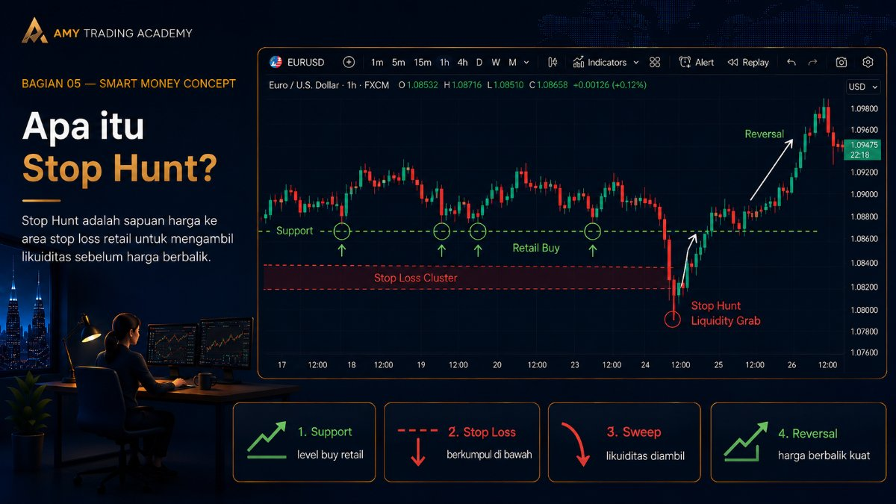
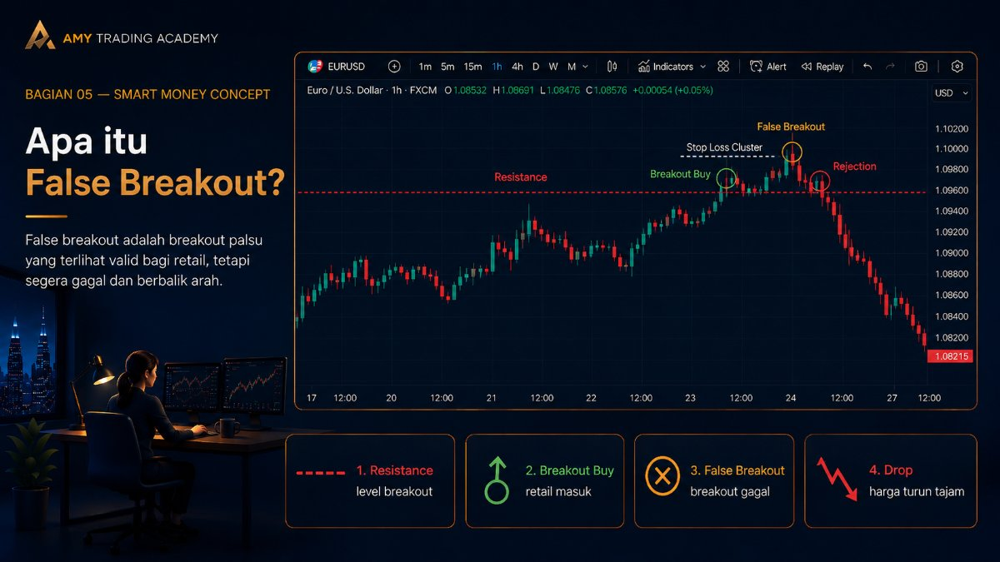
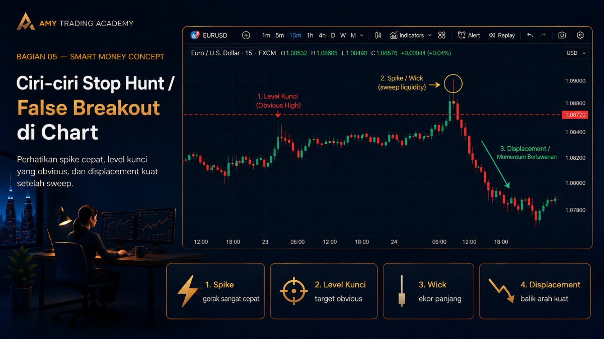
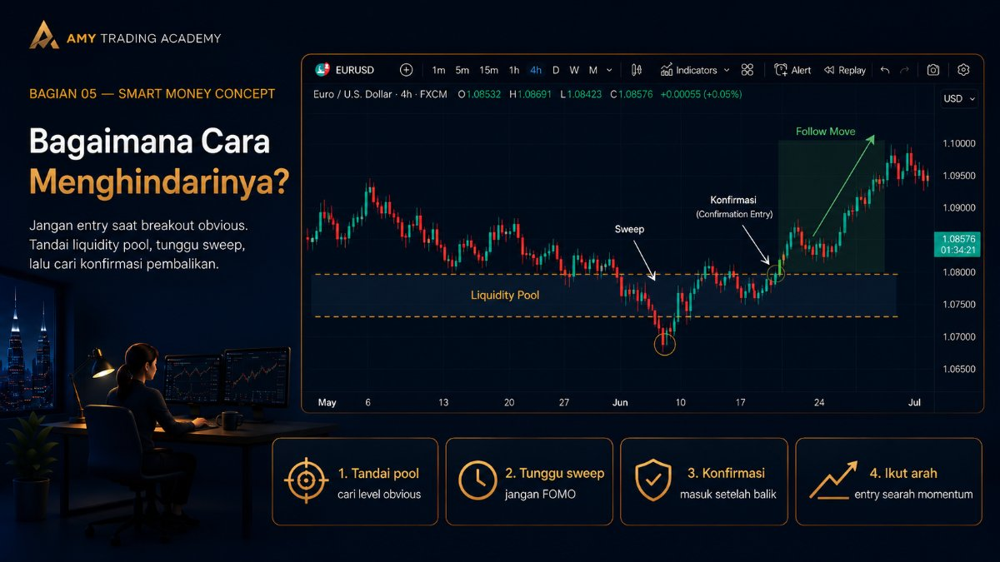

Stop Hunt dan False Breakout
Di bab sebelumnya, kita sudah bahas bagaimana Smart Money membutuhkan "bensin" alias likuiditas untuk menggerakkan harga. Nah, bensin terbesar di market itu ada di mana? Betul, di kumpulan Stop Loss para retail trader. Proses Smart Money menjemput atau menyapu bersih Stop Loss ini sering kita sebut dengan istilah Stop Hunt.
Bagi retail trader, fenomena ini sering dikira sebagai False Breakout (Breakout Palsu). Dua istilah ini merujuk pada kejadian yang sama di chart, tapi dilihat dari dua sudut pandang yang berbeda.
Mari kita bedah pelan-pelan agar kamu tidak lagi jadi korban yang "ditipu" oleh market.
Apa itu Stop Hunt?

Bayangkan kamu sedang memancing. Kamu butuh umpan, kan? Nah, di market finansial, Smart Money sedang memancing likuiditas, dan umpannya adalah pergerakan harga yang seolah-olah "menjanjikan".
Stop Hunt (perburuan Stop Loss) adalah pergerakan harga yang disengaja dan cepat untuk menyentuh area di mana banyak trader ritel meletakkan Stop Loss mereka.
Ingat kembali logika dasar dari order di market:
- Stop Loss untuk posisi Buy adalah pesanan Sell.
- Stop Loss untuk posisi Sell adalah pesanan Buy.
Ketika Smart Money (institusi/bank) ingin masuk posisi Buy dalam jumlah super jumbo, mereka tidak bisa sembarangan klik beli. Kalau mereka lakukan itu, harga akan meledak naik sebelum semua pesanan mereka terpenuhi (slippage parah). Supaya mereka dapat harga murah dan pesanannya terpenuhi semua, mereka butuh jutaan pesanan Sell di pasar.
Dari mana dapat pesanan Sell yang banyak itu? Ya, dari Stop Loss orang-orang yang sebelumnya sedang Buy!
Jadi, Smart Money akan "menekan" harga turun sedikit, menembus area Support yang biasa dijaga retail trader. Orang-orang panik, Stop Loss mereka (yang berupa order Sell) tersentuh. Di saat itulah Smart Money menyerap semua pesanan Sell tersebut dengan order Buy raksasa mereka. Hasilnya? Harga langsung berbalik arah dan terbang tinggi! Retail trader menangis karena harganya naik tepat setelah Stop Loss mereka kena. Inilah yang disebut Stop Hunt.
Apa itu False Breakout?

Sekarang kita lihat dari kacamata trader ritel yang trading pakai ilmu klasik.
Ketika harga mendekati level Resistance yang kuat, trader ritel bersiap. Buku-buku trading klasik mengajarkan: "Jika harga berhasil menembus Resistance (Breakout), itu tanda trend akan berlanjut naik. Siap-siap Buy!"
Maka, saat harga break ke atas Resistance tersebut, para trader ritel berbondong-bondong memencet tombol Buy. Mereka yakin harga akan to the moon. Tapi apa yang terjadi?
Beberapa saat setelah breakout, harga malah stuck, lalu tiba-tiba terjun payung kembali ke bawah Resistance, bahkan turun jauh lebih dalam. Para trader ritel yang tadi Buy saat breakout akhirnya terkena Stop Loss berjam-jam kemudian, atau bahkan Margin Call.
Mereka akan bilang: "Wah, sialan, ternyata itu cuma False Breakout (Breakout Palsu)."
Hubungan Keduanya: Apa yang diratapi oleh trader ritel sebagai False Breakout, sebenarnya adalah skenario Stop Hunt (atau Liquidity Grab) yang sedang dijalankan oleh Smart Money. Smart Money memancing retail untuk Buy di harga mahal, agar Smart Money bisa Sell ke mereka.
Ciri-ciri Stop Hunt / False Breakout di Chart

Lalu bagaimana cara kita mengenali pergerakan manipulatif ini? Ada beberapa tanda khas yang bisa kamu latih mata kamu untuk melihatnya:
- Pergerakan Sangat Cepat (Spike/Wick)
Stop Hunt biasanya tidak memakan waktu lama. Harga akan bergerak tajam menembus support/resistance, lalu dalam hitungan menit (atau dalam satu candle saja), harga langsung ditarik balik (rejection keras). Di chart, ini sering meninggalkan "ekor" atau wick candle yang panjang. - Terjadi di Level Kunci
Stop Hunt jarang terjadi di tengah-tengah rentang harga yang tidak jelas. Ia selalu menargetkan level yang obvious atau "terlalu jelas", seperti Double Top, Double Bottom, atau Swing High / Swing Low yang mencolok. Kenapa? Karena di situlah "kolam uang" (liquidity) berada. - Muncul Momentum Berlawanan (Displacement)
Setelah harga menyapu level tersebut, pergerakan balik arahnya biasanya sangat kuat dan meyakinkan (ada momentum besar). Harga tidak ragu-ragu untuk lari menjauh dari area manipulasi tadi.
Bagaimana Cara Menghindarinya? (Atau Malah Memanfaatkannya)

Kamu tidak bisa menghentikan Stop Hunt, karena itu hukum alam di market. Tapi kamu bisa merubah strategi kamu agar tidak terus-terusan jadi korban.
Aturan Emas: Jangan pernah trading langsung saat harga menembus level support atau resistance yang terlalu kentara. Bersabarlah.
Pendekatan ala SMC:
- Tandai "Kolam Uang": Saat analisa, cari level support/resistance yang sangat rapi (misal disentuh 2-3 kali). Anggap level itu sebagai target (Liquidity Pool) yang akan disapu, BUKAN sebagai tempat entry.
- Tunggu Sapuan (Sweep): Biarkan harga menembus level tersebut. Jangan ikut panik atau FOMO (Fear Of Missing Out).
- Cari Konfirmasi Pembalikan: Setelah harga menyapu level itu dan kembali masuk ke range sebelumnya dengan kuat (meninggalkan ekor panjang), barulah kamu mencari setup entry yang searah dengan pembalikan tersebut di time frame yang lebih kecil.
Dengan sabar menunggu Smart Money bekerja, kamu tidak lagi menjadi bensin yang dibakar oleh mereka. Sebaliknya, kamu bisa "nebeng" di kursi penumpang saat mobil Smart Money sudah siap melaju kencang!